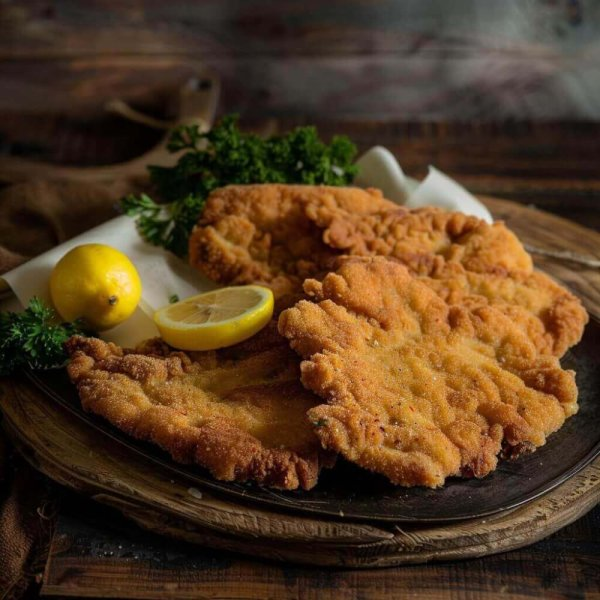

Gallery


Delicious Food Tours in the Heart of Vienna
Vienna’s culinary tradition is a blend of imperial indulgence and cozy café culture. From fluffy Kaiserschmarrn and crispy Schnitzel to creamy Gulasch and delicate pastries, our tours take you through the true flavors of the city – guided by locals who love food.
At Kaiser Bites, we’re proud locals with deep roots in the city’s food scene. We know where to find the true gems—hidden taverns, comforting street food like artisan sausages, and local breweries and wineries that even many Viennese haven’t discovered. Thanks to our close connections with local chefs and brewers, you’ll get behind-the-scenes stories, insider flavors, and an experience that goes far beyond your average tasting tour.
Come hungry—and leave with a full belly and a deeper love for Vienna.
A relaxed morning walk with coffee, pastries, and hidden gems of the old city from 10 am to 12 pm.
Vienna’s street food isn’t flashy — but it’s honest, rich, and deeply rooted in daily life. From the crunch of a freshly baked Semmel filled with Käseleberkäse, to the warm, cheesy bite of a Käsekrainer at a streetside stand. Experience the local favorites that tourists usually just walk past.
Evening atmosphere, candlelight taverns, and full plates of pure Austrian comfort. From 5 pm to 7 pm.
A fully customizable experience – perfect for families, couples, or small groups. Choose your own route, time, and culinary highlights. We take care of the rest.
Phone: +4367763059873
Email: kaiserbitesvienna@gmail.com
WhatsApp: Chat with us on WhatsApp